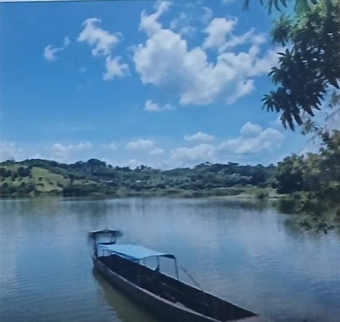
01
Somos
Un Esquema Asociativo Territorial que articula seis municipios para transformar desafíos en soluciones y potencialidades en oportunidades de desarrollo regional.
Seis municipios, una visión regional: una agenda para un Bajo Cauca más sostenible y biodiverso.
Articulamos seis municipios para generar impacto regional.

Un Esquema Asociativo Territorial que articula seis municipios para transformar desafíos en soluciones y potencialidades en oportunidades de desarrollo regional.
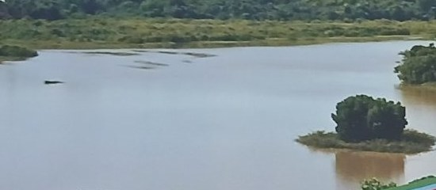
Promoción, integración y ejecución de acciones estratégicas que generan impacto más allá de los límites de un solo municipio.
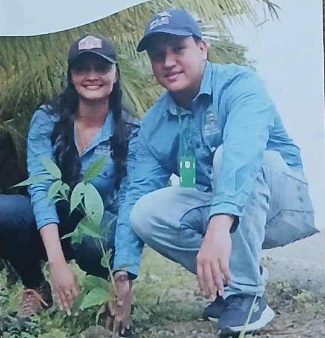
Una visión regional de desarrollo que conecta lo ambiental, social, económico, educativo, cultural e institucional para avanzar hacia un Bajo Cauca más sostenible y biodiverso.
Toca cada parada para conocer el municipio. Dos ríos tejen la región: el Cauca y el Nechí, que se encuentran en Nechí.
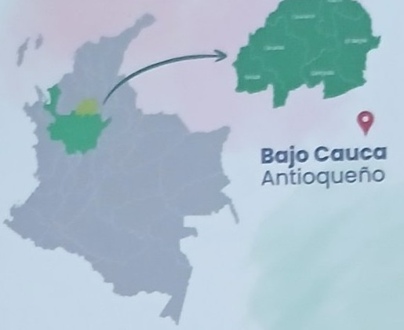
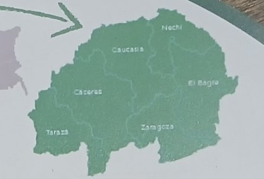
Alianzas estratégicas para que la inversión llegue a toda la subregión.
Conocimiento y capacidades compartidas entre los seis municipios.
Proyectos de impacto que se ven en el territorio.
Conocimiento territorial, articulación multiactor, escala regional y la capacidad de convertir prioridades compartidas en proyectos.
Somos de aquí: conocemos los ríos, las veredas y la gente.
Alcaldías, comunidad, academia, empresa y cooperación en una misma mesa.
Proyectos que superan los límites de un solo municipio.
Prioridades compartidas convertidas en proyectos de alto impacto.
Acceso y conocimiento local.
Conexión entre actores y sectores.
Proyectos estructurados a partir de desafíos reales.
Resultados ambientales, sociales y económicos verificables.
Si eres líder, organización, emprendedor o funcionario, cuéntanos el desafío y tu propuesta. La app arma la ficha y la envías por correo a la RPG-BC en un toque.
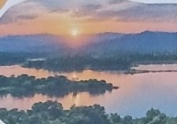
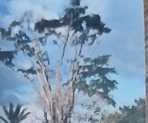
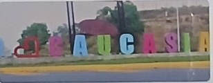
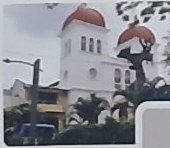
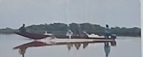
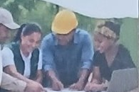
Conectemos nuestras capacidades y construyamos juntos nuevas oportunidades.
No llegamos al territorio… ¡Somos el Territorio!